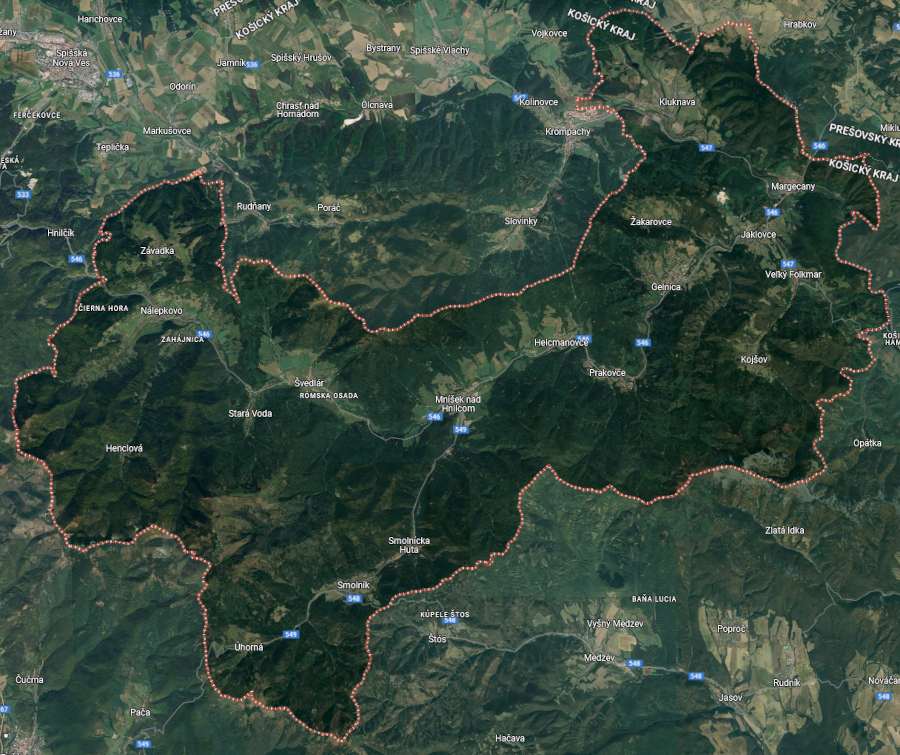

Turistika v gelnickom okrese

História a pamiatky
Banícke múzeum
Banský skanzen a Štôlňa Jozef
Ubytovanie a gastro
Prechádzky pamiatkami mesta
Banský náučný chodník
Turistika
Cykloturistika
Jakubská cesta
Gotická cesta
Oblastná organizácia cestovného ruchu Slovenský raj & Spiš
Turistický vláčik
Organizácie a združenia
Šport a turistika
Reštaurácia a penzión pod vlekom
Udalosti
Šport
Zlatý orol
Stravovanie
Ubytovanie
Cukráreň
Cyklotrasa
Pamätná izba “Heimatstube”